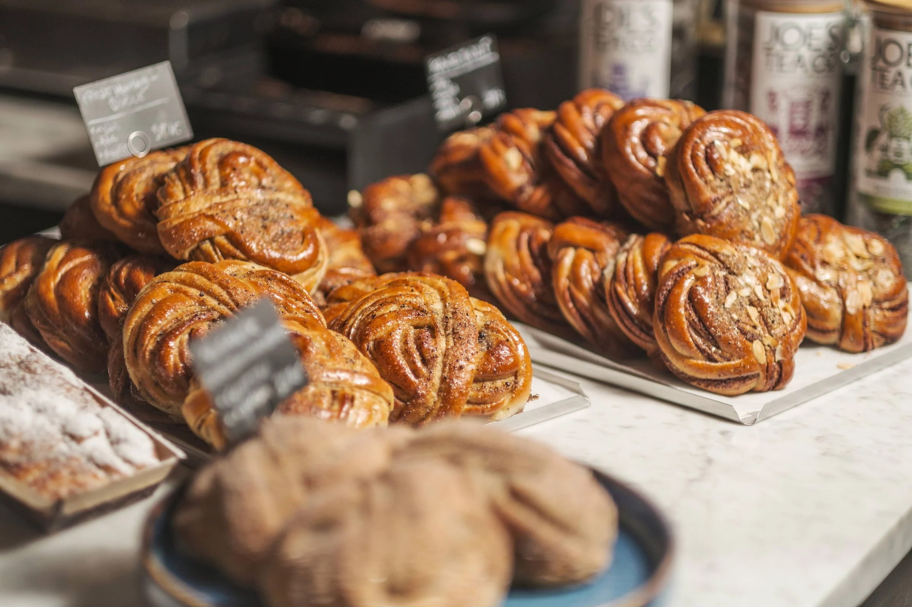

Välkommen till Kaffebryggan
Göteborgs mysigaste café vid kajen.
Om Kaffebryggan
Vi på Kaffebryggan brinner för bra kaffe och lokala, ekologiska
råvaror. Kom och njut av en god kopp kaffe vid kajen! Här på
Kaffebryggan använder vi så mycket ekologiska och lokalt producerade
råvaror som möjligt.

Vår idé är enkel – vi vill att du ska kunna njuta av en god fika
eller lunch med gott samvete. Hållbarhet är en stor del av allt vi
gör. Alla våra råvaror kommer från lokala producenter.

Oavsett om du vill ta en snabb kaffe på vägen, äta lunch med en vän
eller fira en födelsedag, så är du välkommen hos oss. Vi försöker
göra det enkelt attjhitta det du behöver – som vår
meny,
bordsbokning eller
kontaktuppgifter.